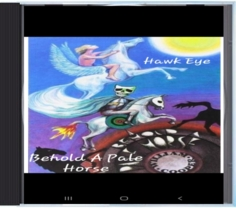

# EverLight's Rite: Behold A Pale Horse (2020) **Overview:** _Hawk Eye’s_ first formal album under the “Behold A Pale Horse” banner is a prophetic war cry. The tracks travel through spiritual warfare, government conspiracy, mental manipulation, and rebellion against societal programming. It’s raw, it’s unfiltered, and it’s written like scripture passed down from the edge of an apocalypse. **Symbolism & Themes:** - 🔥 Spiritual Warfare - ⚔️ Standing as the Last One Left - 🕊️ Whistleblowing (track 4) as a spiritual act - 🔐 Seals and Prophecies (track 11) **Commentary:** Each song is less a rap and more a rite of passage. The mixtape concludes in a call to the Ancients, invoking the return of wisdom and cosmic memory.